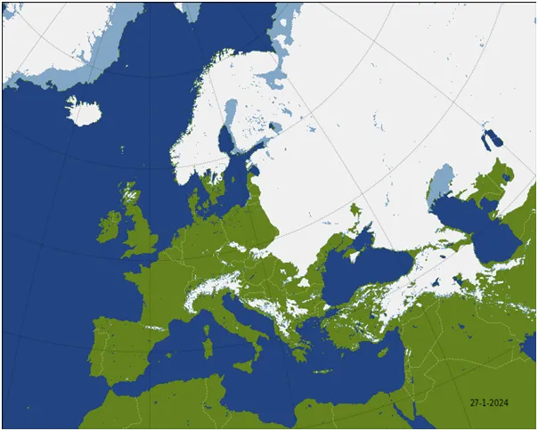
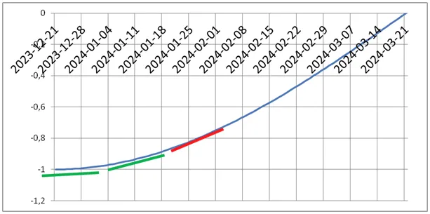
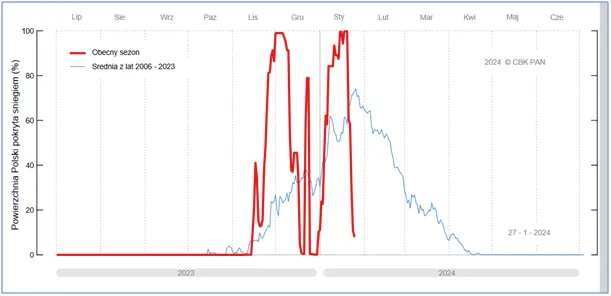
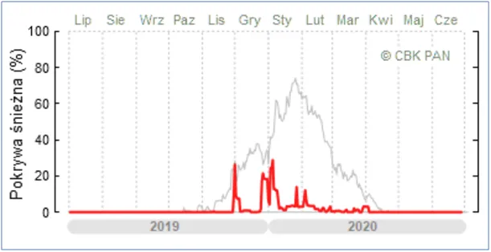
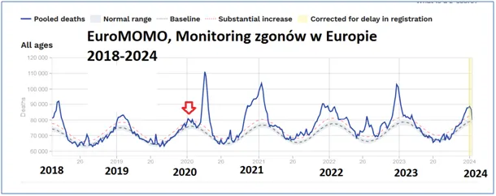

Czym jest klimat a czym pogoda? Sinus, kosinus, przyspieszamy.
Koniec stycznia to już ponad miesiąc od początku astronomicznej zimy. Sinusoida pokazująca długość dnia weszła na odcinek szybkiego wzrostu, pokazuje to czerwona styczna na wykresie. Oznacza to, że z każdym dniem wieczór będzie zapadał wyraźnie później, a rano nie będziemy musieli w mroku przedzierać się do ukochanej pracy.

Mapka pokrywy śniegowej pokazuje granicę zimy na Bugu i Karpatach, ale w najbliższym tygodniu przesunie się mocno na wschód.

Układ cyrkulacji wyjątkowo sprzyja, aby ciepły Atlantyk ogrzał Europę, co nie oznacza końca zimy. Ważny jest drugi wykres, który pokazuje na czerwono aktualny stopień pokrycia Polski śniegiem, a linia niebieska pokazuje średnią z ostatnich blisko 20 lat.

Ta niebieska linia to klimat, jest to zarazem PRAWDOPODOBIEŃSTWO pokrycia Polski śniegiem jako cyklicznego zjawiska zimy wykreślone na podstawie wieloletniej obserwacji. Każda zima jest inna, bo za oknem obserwujemy pogodę, natomiast PRAWDOPODOBIEŃSTWO występowania zjawisk atmosferycznych to KLIMAT. Zerowe szanse na przymrozki na południowym wybrzeżu Turcji powodują, że to "ten kraj, gdzie cytryna dojrzewa, pomarańcz blask zielone złoci drzewa".

Kolejny wykres to przykład zimy skrajnie lekkiej 2019/2020, po której w całej Europie liczba zgonów była wyjątkowo niska, co monitorowały wszystkie ośrodki naukowe, a czemu uparcie zaprzeczała prasa.

Późniejszy pik zgonów opisałem szczegółowo w raporcie " Prawdziwa tragedia narodu polskiego 2020/2021 walka z covid-19" https://pawelklimczewski.pl/2021/07/27/__trashed/?trk=public_post_comment-text
Paweł Klimczewski